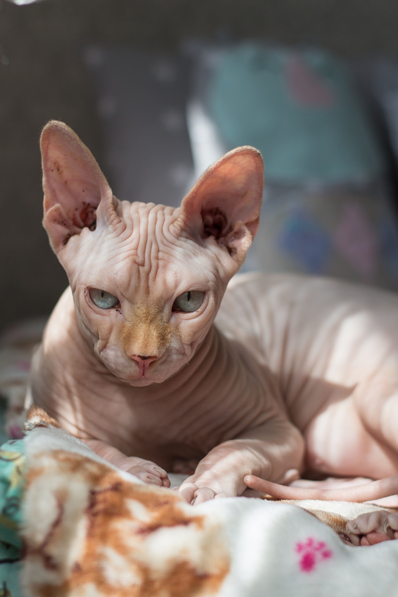

貓貓介紹

暹羅貓
暹羅貓是很早被承認的東方短毛貓品種之一。這個品種的由來尚未確定，相信是來自東南亞。據稱是源自暹羅寺廟裏飼養的貓。

英國短毛貓
英國短毛貓是歐洲短毛貓和美國短毛貓的對應品種。
19世紀末愛麗斯夢遊仙境中路易斯·卡洛爾的柴郡貓就被描繪成了一隻英國短毛斑紋貓。幾乎在同一時代，英國的育種專家們，包括哈里斯威爾開始了挑選最美麗雜交種貓的工作。
19世紀末愛麗斯夢遊仙境中路易斯·卡洛爾的柴郡貓就被描繪成了一隻英國短毛斑紋貓。幾乎在同一時代，英國的育種專家們，包括哈里斯威爾開始了挑選最美麗雜交種貓的工作。

斯芬克斯貓
斯芬克斯貓又稱加拿大無毛貓。這種貓是由於基因突變而產生的品種。體重3.5到7公斤，肌肉發達，毛髮稀疏，皮膚皺褶似羚羊皮。頭部稜角分明。微呈三角型。眼大呈檸檬狀，多數呈金色，上眼角斜向耳，間距較寬。這是一種對陽光十分敏感的貓。

狸花貓
狸花貓是一種起源於中國古代的家貓，現在已經被美國國際愛貓協會和中國愛貓協會認可。